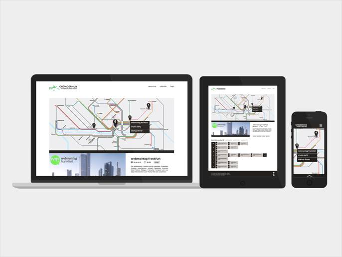

Wir wagen Wirtschaft.
Die Wirtschaftsförderung Frankfurt GmbH und der Gründerhub FrankfurtRheinMain laden alle Ansprechpartner/innen aus der Region zum offiziellen Informationstag des Gründerhub FrankfurtRheinMain ein.
 Der Gründerhub FrankfurtRheinMain hat das Ziel alle Ansprechpartner und Institutionen auf einer neuen Informations- und Kommunikationsplattform zusammen zu bringen, damit eine gemeinsame Grundlage für ein lebendiges Gründer-Ökosystem geschaffen wird. Es gibt im gesamten Rhein-Main-Gebiet eine große Zahl von Initiativen, Veranstaltungen, Sprechstunden, Aus- und Weiterbildungen von Kommunen und gewerblichen Anbietern. Wir möchten sie – uns alle – miteinander vernetzen und damit nach innen und außen sichtbar machen.
{kind=link}
Gründer und junge Unternehmen sollen Anbieter und Ansprechpartner leichter finden, sich auf Veranstaltungen und bei Stammtischen treffen, miteinander ins Geschäft kommen und die Angebote für Gründungs-, Rechts- und Steuerberatung, Aus- und Weiterbildung in der ganzen Region leichter finden können.
Wir freuen uns auf Sie!
9. Oktober im Konferenzsaal der Deutschen Bank AG.
Die Veranstaltung beginnt um 15:30 Uhr.
Anmeldung
Bitte melden Sie sich an:
via Email startup@frankfurt-business.net
oder via Telefon: (0 69) 21 23 62 11
Ort
Konferenzsaal der Deutschen Bank AG
Taunusanlage 12
DE-60325 Frankfurt
deutsche-bank.de